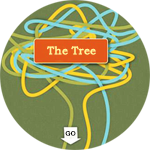

HealthGIS
Geographic Distribution
Concentric Topology
Risk Ranking

1.Aksu
2.Alty
3.Alxa
4.Ankang
5.Anqing
6.Anshan
7.Anshun
8.Anyang
9.Baicheng
10.Baise
11.Baishan
12.Baiyin
13.Bangbu
14.Baoding
15.Baoji
16.Baoshan
17.Baoting
18.Baotou
19.Bayannur
20.Bayingolin
21.Bazhong
22.Beihai
23.Beijing
24.Benxi
25.Bijie
26.Binzhou
27.Bortala
28.Bozhou
29.Cangzhou
30.Changchun
31.Changde
32.Changhua
33.Changji
34.Changjiang
35.Changsha
36.Changzhi
37.Changzhou
38.Chaoyang
39.Chaozhou
40.Chengde
41.Chengdou
42.Chengmai
43.Chenzhou
44.Chiayi
45.Chifeng
46.Chizhou
47.Chongqing
48.Chongzuo
49.Chuzhou
50.Dali
51.Dalian
52.Dandong
53.Danzhou
54.Daqing
55.Datong
56.Daxinganling
57.Dazhou
58.Dehong
59.Deyang
60.Dezhou
61.Dingan
62.Dingxi
63.Diqing
64.Dongfang
65.Dongguan
66.Dongying
67.Enshi
68.Ezhou
69.Fangchenggang
70.Foshan
71.Fushun
72.Fuxin
73.Fuyang
74.Fuzhou
75.Fuzhou
76.Gannan
77.Ganzhou
78.Garze
79.Golog
80.Guang'an
81.Guangyuan
82.Guangzhou
83.Guigang
84.Guilin
85.Guiyang
86.Guyuan
87.Haibei
88.Haidong
89.Haikou
90.Haixi
91.Handan
92.Hangzhou
93.Hanzhong
94.Harbin
95.Hebi
96.Hechi
97.Hefei
98.Hegang
99.Heihe
100.Hengshui
101.Hengyang
102.Heyuan
103.Heze
104.Hezhou
105.Hinggan
106.Hohhot
107.Hong Kong
108.Honghe
109.Hotan
110.Hsinchu
111.Huai'an
112.Huaibei
113.Huaihua
114.Huainan
115.Hualien
116.Huanggang
117.Huangnan
118.Huangshan
119.Huangshi
120.Huizhou
121.Huludao
122.Hulunbuir
123.Huzhou
124.Ili(Yili)
125.Jiamusi
126.Jian
127.Jiangmen
128.Jiaozuo
129.Jiaxing
130.Jiayuguan
131.Jieyang
132.Jilin
133.Jinan
134.Jinchang
135.Jincheng
136.Jingdezhen
137.Jingmen
138.Jingzhou
139.Jinhua
140.Jining
141.Jinzhong
142.Jinzhou
143.Jiujiang
144.Jiuquan
145.Jixi
146.Jiyuan
147.Kaifeng
148.Kaohsiung
149.Kashgar
150.Keelung
151.Keramay
152.Kezilsu
153.Kinmen
154.Kumul(Hami)
155.Kunming
156.Laibin
157.Laiwu
158.Langfang
159.Lanzhou
160.Ledong
161.Leshan
162.Lhasa
163.Liangshanzhou
164.Lianyungang
165.Liaocheng
166.Liaoyang
167.Liaoyuan
168.Lijiang
169.Lincang
170.Linfen
171.Lingshui
172.Linxia
173.Linyi
174.Lishui
175.Liupanshui
176.Liuzhou
177.Longnan
178.Longyan
179.Loudi
180.Lu'an
181.Luohe
182.Luoyang
183.Luzhou
184.Lvliang
185.Ma'anshan
186.Macau
187.Maoming
188.Meishan
189.Meizhou
190.Mianyang
191.Miaoli
192.Mudanjiang
193.Nagqu
194.Nanchang
195.Nanchong
196.Nanjing
197.Nanning
198.Nanping
199.Nantong
200.Nantou
201.Nanyang
202.Neijiang
203.New Taipei
204.Ngari
205.Ngawa
206.Ningbo
207.Ningde
208.Nujiang
209.Nyingchi
210.Ordos
211.Panjin
212.Panzhihua
213.Penghu
214.Pingdingshan
215.Pingdong
216.Pingliang
217.Pingxiang
218.Pu'er
219.Putian
220.Puyang
221.Qamdo
222.Qiandongnan
223.Qiannan
224.Qianxinan
225.Qingdao
226.Qingyang
227.Qingyuan
228.Qinhuangdao
229.Qinzhou
230.Qionghai
231.Qiongzhong
232.Qiqihar
233.Qitaihe
234.Quanzhou
235.Qujing
236.Quzhou
237.Rizhao
238.Sanmenxia
239.Sanming
240.Sansha
241.Sanya
242.Shamen
243.Shanghai
244.Shangluo
245.Shangqiu
246.Shangrao
247.Shannan
248.Shantou
249.Shanwei
250.Shaoguan
251.Shaoxing
252.Shaoyang
253.Shenyang
254.Shenzhen
255.Shijiazhuang
256.Shiyan
257.Shizuishan
258.Shuangyashan
259.Shuozhou
260.Siping
261.Songyuan
262.Suihua
263.Suining
264.Suizhou
265.Suzhou
266.Tacheng
267.Tai'an
268.Taichung
269.Taidong
270.Tainan
271.Taipei
272.Taiyuan
273.Taizhou
274.Taizhou
275.Tangshan
276.Taoyuan
277.Tianjin
278.Tianshui
279.Tieling
280.Tongchuan
281.Tonghua
282.Tongliao
283.Tongling
284.Tongren
285.Turpan
286.Ulanqab
287.Urumqi
288.Wanning
289.Weicu
290.Weifang
291.Weihai
292.Weinan
293.Wenchang
294.Wenshan
295.Wenzhou
296.Wuhai
297.Wuhan
298.Wuhu
299.Wuwei
300.Wuxi
301.Wuzhishan
302.Wuzhong
303.Wuzhou
304.Xi'an
305.Xiangtan
306.Xiangxi
307.Xiangyang
308.Xianning
309.Xianyang
310.Xiaogan
311.Xilingol
312.Xingtai
313.Xining
314.Xinxiang
315.Xinyang
316.Xinyu
317.Xinzhou
318.Xishuangbanna
319.Xiuqian
320.Xiuzhou
321.Xuancheng
322.Xuchang
323.Xuzhou
324.Ya'an
325.Yan'an
326.Yanbian
327.Yancheng
328.Yangjiang
329.Yangquan
330.Yangzhou
331.Yantai
332.Yibin
333.Yichang
334.Yichun
335.Yichun
336.Yilan
337.Yinchuan
338.Yingkou
339.Yingtan
340.Yiyang
341.Yongzhou
342.Yueyang
343.Yulin
344.Yulin
345.Yuncheng
346.Yunfu
347.Yunlin
348.Yushuzhou
349.Yuxi
350.Zaozhuang
351.Zhangjiajie
352.Zhangjiakou
353.Zhangye
354.Zhangzhou
355.Zhanjiang
356.Zhaoqing
357.Zhaotong
358.Zhengzhou
359.Zhenjiang
360.Zhongshan
361.Zhongwei
362.Zhoukou
363.Zhoushan
364.Zhuhai
365.Zhumadian
366.Zhuzhou
367.Zibo
368.Zigong
369.Ziyang
370.Zunyi